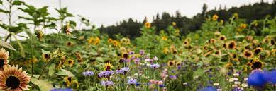
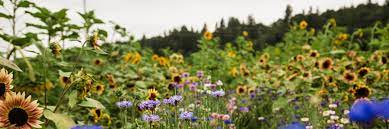
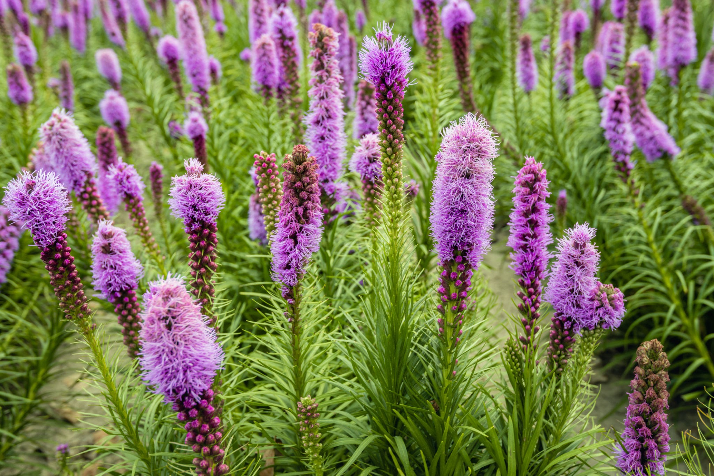
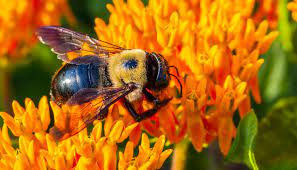
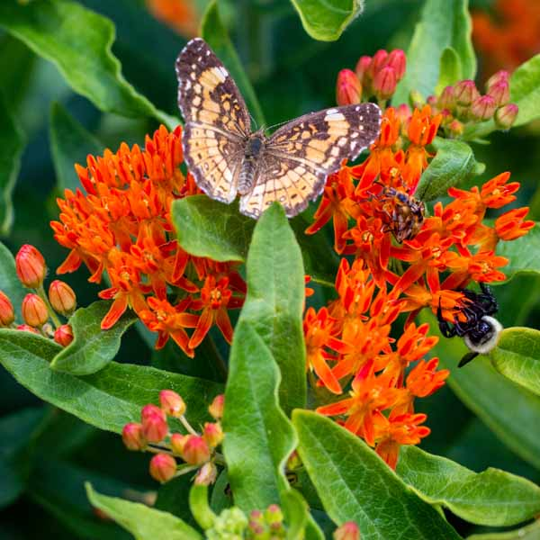

Contact Info
Email: nativeplantsoftn@flowermail.com Instagram: @nativeplantsoftn
Email: nativeplantsoftn@flowermail.com Instagram: @nativeplantsoftn
There are many types of plants that are native to TN. These plants are very important to our natural environment and provide wonderful benefits to the native pollinators and habitats of animals.
 Native PlantsNative Pollinators are wonderful for the enviroment! Click here to learn more about what species of bugs and animals are native pollinators of TN.
 Native PollinatorsClick here to view our gallery of photos of a few different species of native plants and native pollinators!
 Gallery